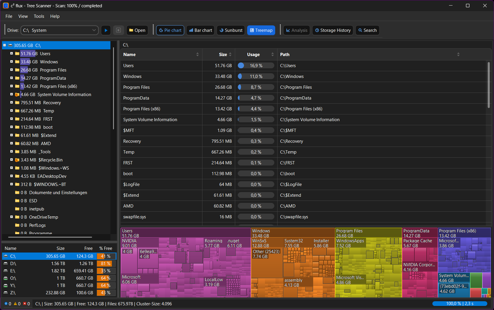
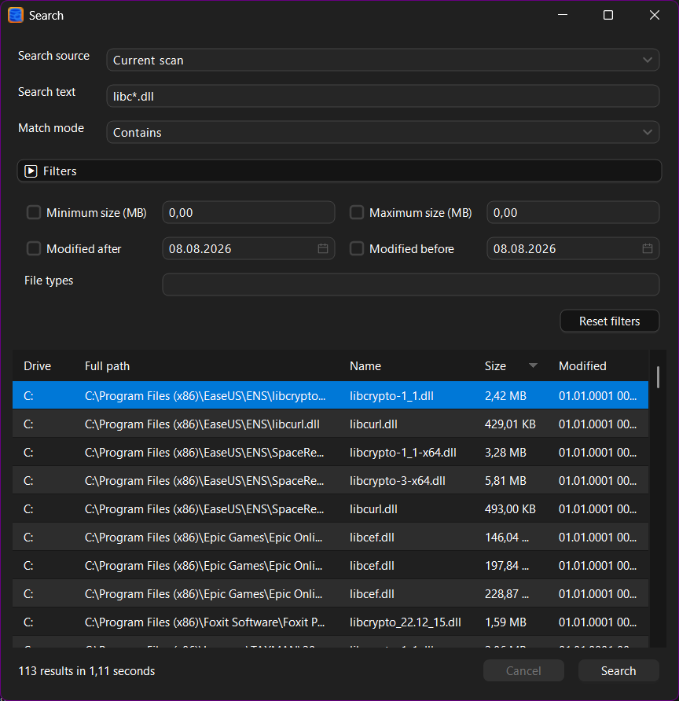
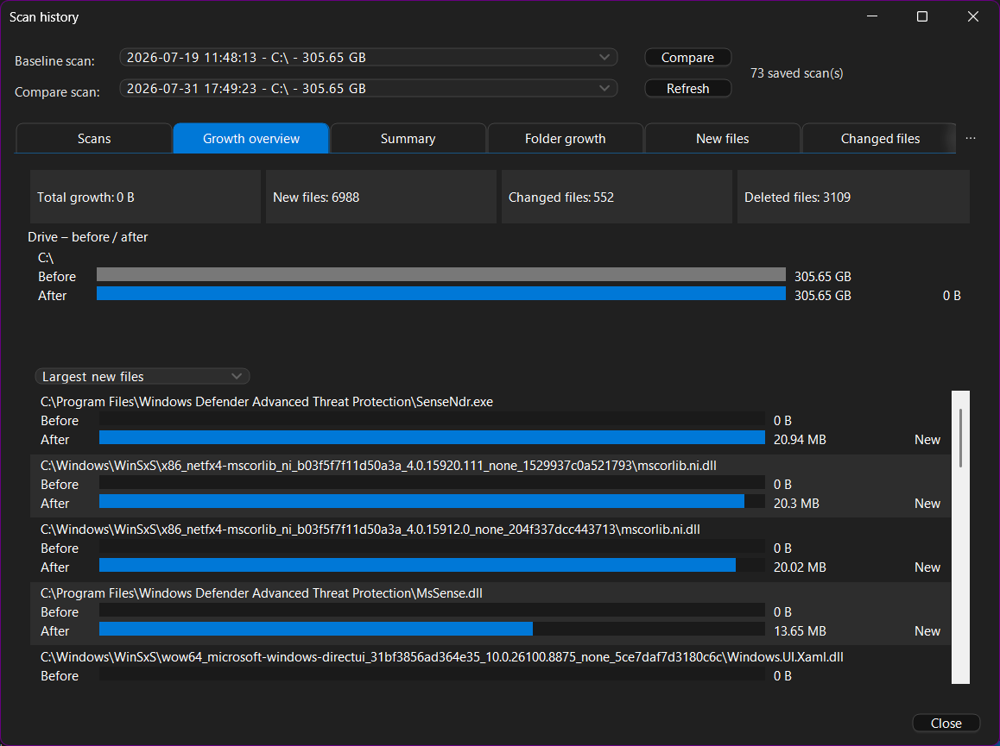
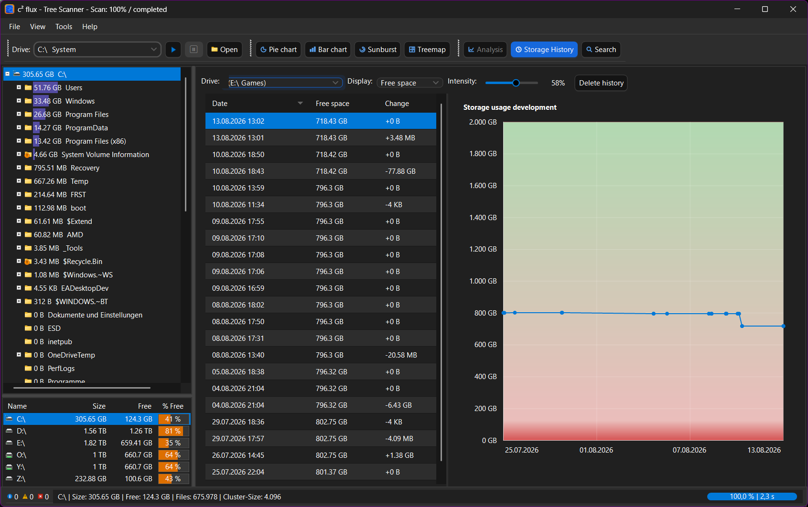

Fast scanning
Regular scans use caching for quick repeat runs. c²flux Scan reads NTFS metadata directly when administrator access is available.
Scan drives, inspect usage and find files without waiting around. Fast regular scans, an even faster NTFS mode, and useful views without clutter.

No dashboard for the sake of having a dashboard. The interface stays close to the files and folders you are inspecting.
Regular scans use caching for quick repeat runs. c²flux Scan reads NTFS metadata directly when administrator access is available.
Table, bar chart, sunburst and treemap. Change the view without changing the underlying scan.
Search hundreds of thousands of entries and narrow results by size, date and file type.
Store scans in SQLite, compare states and track free space over time.
Real c² flux views from the current desktop application.
On NTFS drives, c²flux Scan can use the Master File Table for a substantially faster full-drive scan. It requires administrator privileges; if the mode cannot be used, c² flux falls back to the regular scanner.
Read how it works →$ drive C:\
$ mode c²flux Scan
reading MFT
building tree
refreshing view
completed 675,978 files
100.0% 2.3 sSearch by name and filter the result instead of digging through folders manually.

Keep scan snapshots, compare them and see where storage use moved.



Windows x64 · GPL-3.0